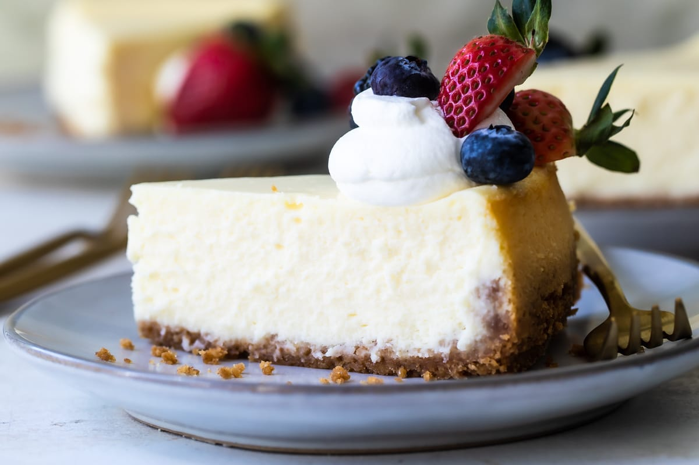

Cheesecake
Ingredients
- Graham Cracker Crust
- 1 and 1/2 cups (180g) graham cracker crumbs (about 12 full sheet graham crackers)
- 1/4 cup (50g) granulated sugar
- 5 Tablespoons (71g) unsalted butter, melted
- Cheesecake
- 32 ounces (904g) full-fat brick cream cheese, softened to room temperature
- 1 cup (200g) granulated sugar
- 1 cup (240g) full-fat sour cream, at room temperature
- 1 teaspoon pure vanilla extract
- 2 teaspoons fresh lemon juice (optional, but recommended)
- 3 large eggs, at room temperature
Steps
- Adjust the oven rack to the lower-middle position and preheat oven to 350°F (177°C).
- Make the crust: If you’re starting out with full graham crackers, use a food processor or blender to grind them into fine crumbs. Pour into a medium bowl and stir in sugar until combined, and then stir in the melted butter. Mixture will be sandy. Try to smash/break up any large chunks. Pour into an ungreased 9-inch or 10-inch springform pan. With medium pressure using your hand, pat the crumbs down into the bottom and partly up the sides to make a compact crust. Do not pack down with heavy force because that makes the crust too hard. Simply pat down until the mixture is no longer crumby/crumbly and you can use the flat bottom of a small measuring cup to help smooth it all out if needed. Pre-bake for 10 minutes. Remove from the oven and place the hot pan on a large piece of aluminum foil. The foil will wrap around the pan for the water bath in step 4. Allow crust to slightly cool as you prepare the filling.
- Make the filling: Using a handheld or stand mixer fitted with a paddle attachment, beat the cream cheese and granulated sugar together on medium-high speed in a large bowl until the mixture is smooth and creamy, about 2 minutes. Add the sour cream, vanilla extract, and lemon juice then beat until fully combined. On medium speed, add the eggs one at a time, beating after each addition until just blended. After the final egg is incorporated into the batter, stop mixing. To help prevent the cheesecake from deflating and cracking as it cools, avoid over-mixing the batter as best you can. You will have close to 6 cups of batter.
- Prepare the simple water bath (see note): Watch my video tutorial below; the visual guide will assist you in this step. Boil a pot of water. You need 1 inch of water in your roasting pan for the water bath, so make sure you boil enough. I use an entire kettle of hot water. As the water is heating up, wrap the aluminum foil around the springform pan. Place the pan inside of a large roasting pan. Pour the cheesecake batter on top of the crust. Use a rubber spatula or spoon to smooth it into an even layer. Carefully pour the hot water inside of the pan and place in the oven. (Or you can place the roasting pan in the oven first, then pour the hot water in. Whichever is easier for you.)
- Bake cheesecake for 55–70 minutes or until the center is almost set. If you notice the cheesecake browning too quickly on top, tent it with aluminum foil halfway through baking. When it’s done, the center of the cheesecake will slightly wobble if you gently shake the pan. Turn the oven off and open the oven door slightly. Let the cheesecake sit in the oven in the water bath as it cools down for 1 hour. Remove from the oven and water bath, then cool cheesecake completely uncovered at room temperature. Then cover and refrigerate the cheesecake for at least 4 hours or overnight.
- Use a knife to loosen the chilled cheesecake from the rim of the springform pan, then remove the rim. Using a clean sharp knife, cut into slices for serving. For neat slices, wipe the knife clean and dip into warm water between each slice.
- Serve cheesecake with desired toppings (see Note). Cover and store leftover cheesecake in the refrigerator for up to 5 days.
Rate this Recipe??